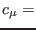
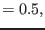
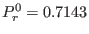
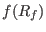
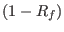
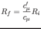
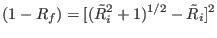
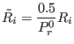
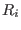

Next: Calculate c3 from steady-state Up: Fortran: Module Interface turbulence: Previous: The Schumann and Gerz Contents
INTERFACE:
subroutine cmue_rf(nlev)DESCRIPTION:
In the ISPRAMIX ocean model (see Eifler and Schrimpf (1992)), another approach is used for considering stability effects on vertical mixing. The stability functions in this model are of the form:
| const | (199) |
The neutral Prandtl number used there is . The function  is assumed to lay between the values 0.18 (corresponding to a supercritically stratified situation) and 2.0 (preventing it from growing too much under unstable conditions).
A formulation for  can be derived from the definition of the flux Richardson number
|  | (201) |
and (200), see Beckers (1995):
|  | (202) |
with
|  | (203) |
where  is the gradient Richardson number.
USES:
use turbulence, only: cm0_fix,Prandtl0_fix,xRF
use turbulence, only: cmue1,cmue2,an,as
IMPLICIT NONE
INPUT PARAMETERS:
integer, intent(in) :: nlevREVISION HISTORY:
Original author(s): Manuel Ruiz Villarreal, Hans Burchard
$Log: cmue_rf.F90,v $
Revision 1.8 2005-11-15 11:35:02 lars
documentation finish for print
Revision 1.7 2005/06/27 13:44:07 kbk
modified + removed traling blanks
Revision 1.6 2004/08/18 12:53:07 lars
updated documentation
Revision 1.5 2003/03/28 09:20:35 kbk
added new copyright to files
Revision 1.4 2003/03/28 08:37:27 kbk
removed tabs
Revision 1.3 2003/03/10 09:02:04 gotm
Added new Generic Turbulence Model +
improved documentation and cleaned up code
Revision 1.2 2002/02/08 08:59:58 gotm
Revision 1.1.1.1 2001/02/12 15:55:58 gotm
initial import into CVS
Karsten Bolding 2012-01-24